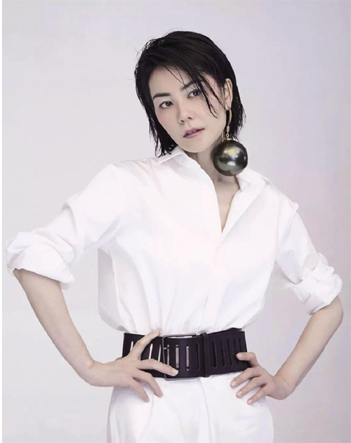
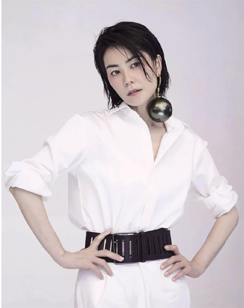
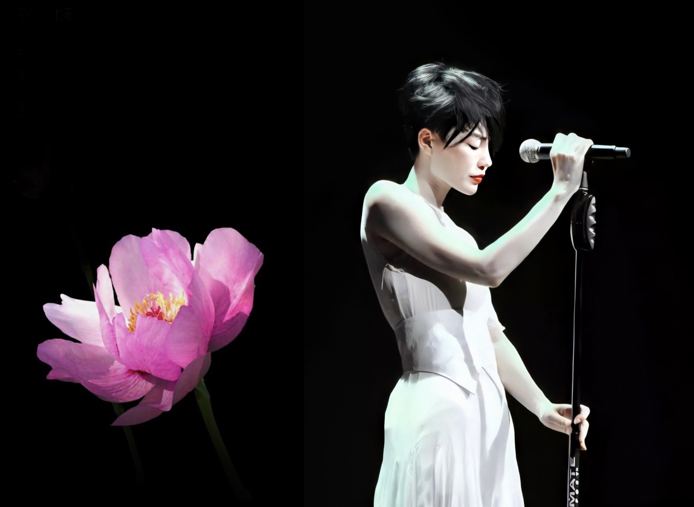
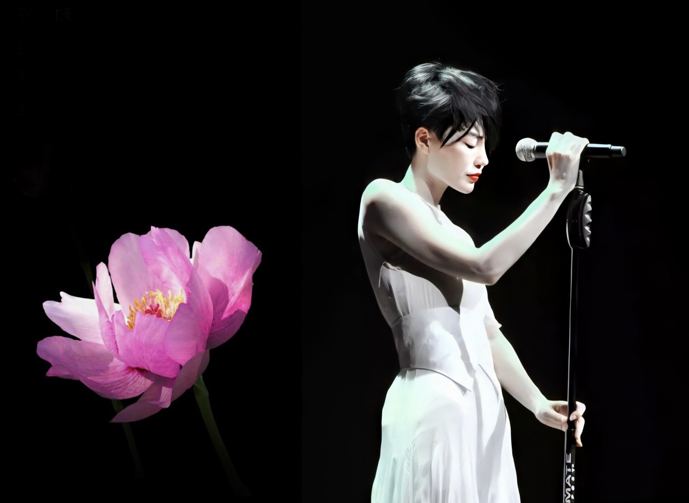

 

操作方式
不要碰亏损的股票，为了防止被套的太深！
下棋前好好想一下！
学会潜伏，因为风格总会切换的，——服装业的切换不就是一个粒子，以新疆棉花为转折点的潜伏；同时资金总是要套现的，但又不可能闲置，因此会有板块轮换；
相信自己的判断，一旦下手了，不要轻易的退出！
行情很好的时候:my opinion
行情很好的时候，可以追高，将止盈点可以设置为20%左右；
行情不好的时候:my opinion
设置的止盈点坚决不超过6%，也就是两天不超过3%——据我观察，不会连涨两天，而一个行业平均两天大涨不超过4%，但是自己不会吧这8%全部吃掉，所以设置止盈点6%.
可以做短线，做T，短线坚决止盈止亏——在震荡的时期，因为伴随着正弦波动，高低点切换做T也是可以赚钱的；
不要追逐热点，很容易被套——股市的风格切换的很快，很容易被套，在紫金矿业的2021追热点的时候，首先吃下了6%的浮盈，但是很快风格切换，接下来就是大亏。
如果硬要追逐热点的话，必须设立浮盈浮亏在3%以内，立刻撒手；
如果将短线做成了长线，那就做下去把，无所谓的；